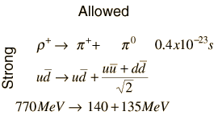
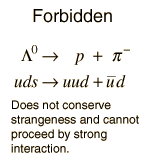
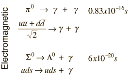
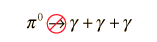
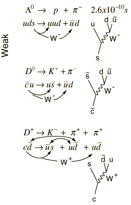
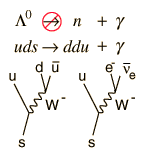

Allowed and Forbidden Particle Decays
Discrete particles tend to be unstable and to decay into two or more particles of lesser mass unless they are forbidden to do so by some principle or conservation law. This tendency is sometimes referred to as the totalitarian principle. It is instructive to look at some allowed and forbidden decays and to develop patterns which would allow us to predict whether a given decay will occur.
One way to examine a decay is to list the quark content of each of the particles. For this purpose, it is convenient to refer to the meson table and baryon table.

If the quark content on the two sides matches and the decay conserves energy, baryon number, and charge, then it will tend to decay very rapidly, on the order of 10-22 seconds. Note that the quark-antiquark pairs which constitute the p0 can be created if there is sufficient energy available in the decay. | 
The weak interaction can transform the flavor of the quarks, and this decay can proceed by the weak interaction. |

Since the p0 is composed of quark-antiquark pairs, it can decay electromagnetically into photons. It requires two photons to conserve momentum. | 
The decay of the pion into three photons could conserve energy and momentum. But it violates charge conjugation symmetry, and it is found that strong and electromagnetic decays are invariant under charge conjugation. |

The weak interaction decays are more complex and have more possibilities. They involve quark transformations involving the W particles to change quark flavors. Besides tracking the quark content of the particles, it is helpful to examine the Feynmann diagrams for W decay to see what the usual decay products are. With those tools, the first two decays above are fairly straightforward. The third requires a bit more gymnastics with the quarks. It requires the production of a quark-antiquark pair to proceed as indicated. | 
Since the interaction shown does not conserve strangeness, it will not proceed by the strong or electromagnetic interactions. It might be presumed that it ought to go by weak interaction, but the Feynmann diagrams above show the decays of the strange quark, and the decay shown is not included as a possibility. In order to get the extra down quark to form the neutron, you would need to create and up and anti-up as well. That would usually pair with a down-antidown to form a π0 meson, not a photon. |
|
Index
Particle concepts
References
Das & Ferbel
Ch. 11 |